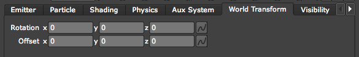
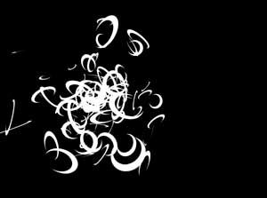
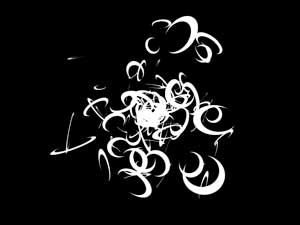
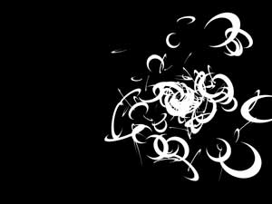
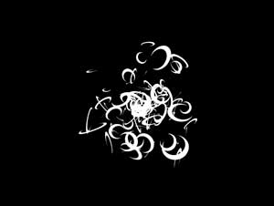

World Transform tab
World Transform is a set of transform properties for the Particular system as a whole. These controls let you changes the position and rotation of the entire particle system. World Transform changes the camera perspective without moving the camera in the scene. In other words, you don't have to move the Camera to move the particles, which frees you to do a lot of interesting animation.
NOTE: World Transform is sometimes not compatible with Physics tab> Bounce mode. They are compatible with an infinite Floor rotated in Y only, but any other change (Position or Rotation) will break the bouncing off nodes. Or the nodes would have to be moved/rotated exactly the same way as in World Transform. Just take our word on this and look for a tutorial that gives further explanation. If you are using the Bounce mode, we suggest that you avoid using the World Transform controls since you will get unpredictable results.

The World Transform tab.
Rotation x, y, z
The three controls set the movement of the rotation of the entire particle system.
Left to right, Rotation X at -60, 0 and 60.
Left to right, Rotation Y at -70, 0 and 70.
Left to right, Rotation Z at -50, 0 and -50.
Offset x, y, z
These three controls set the movement of the position of the entire particle system.
  
Left to right, Offset X at -120, 0 and 120.
Left to right, Offset Y at -150, 0 and 150.

Left to right, Offset Z at -200, 0 and 200.